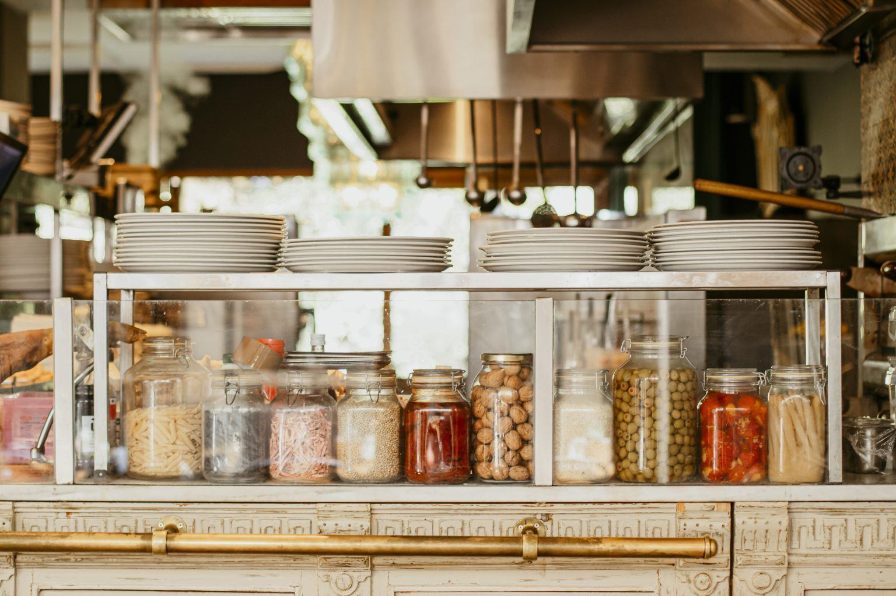
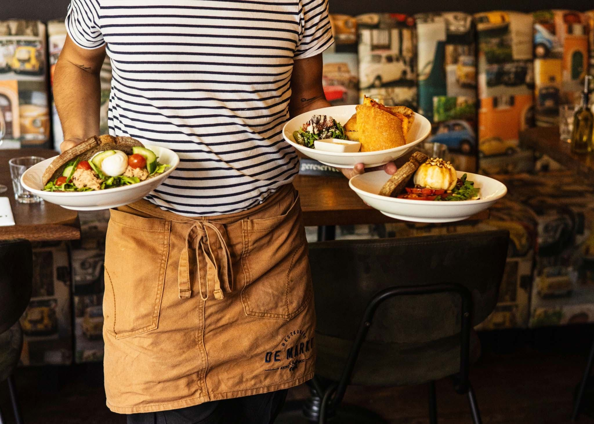
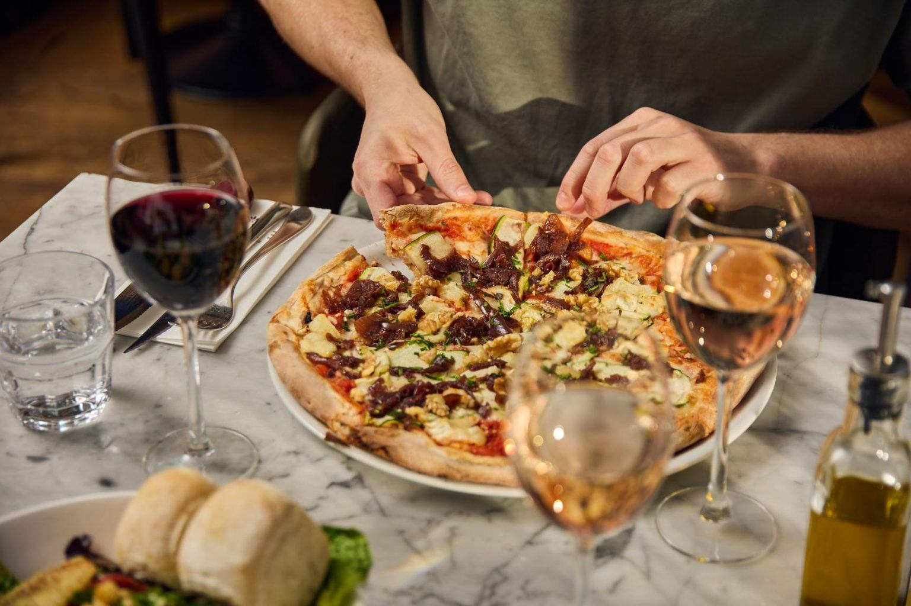
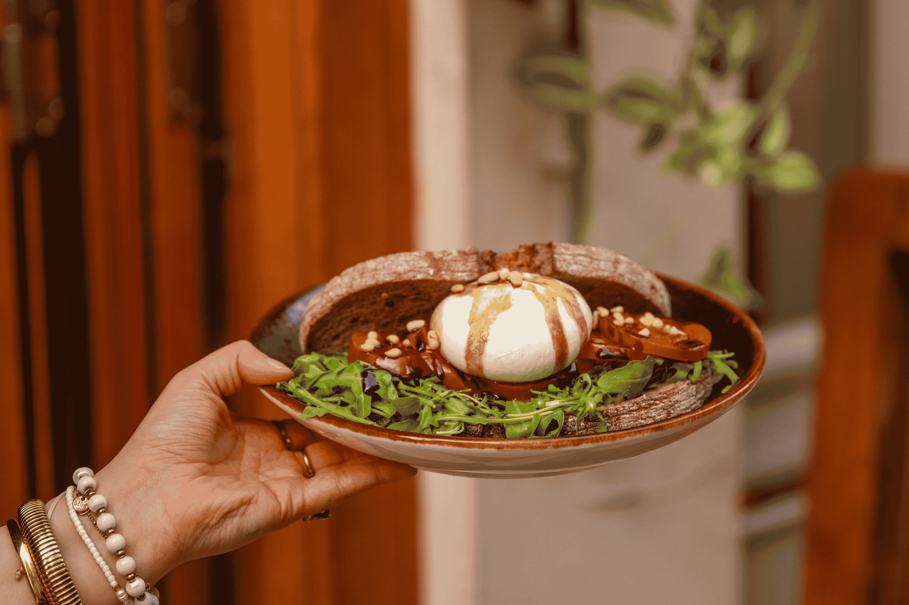
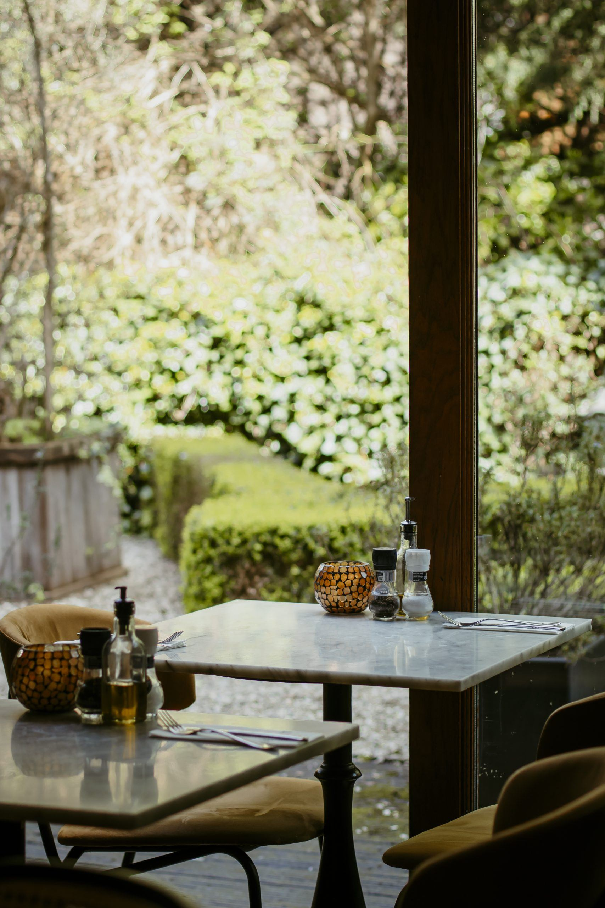
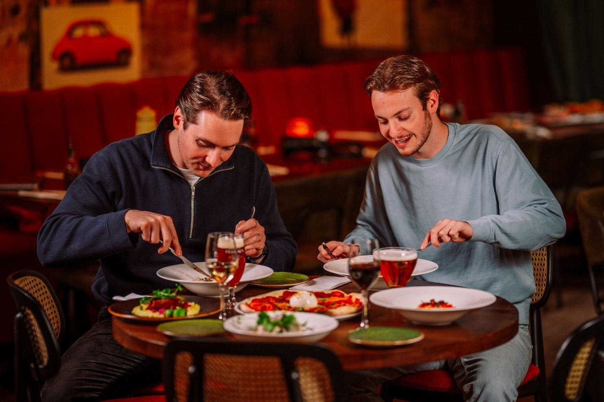
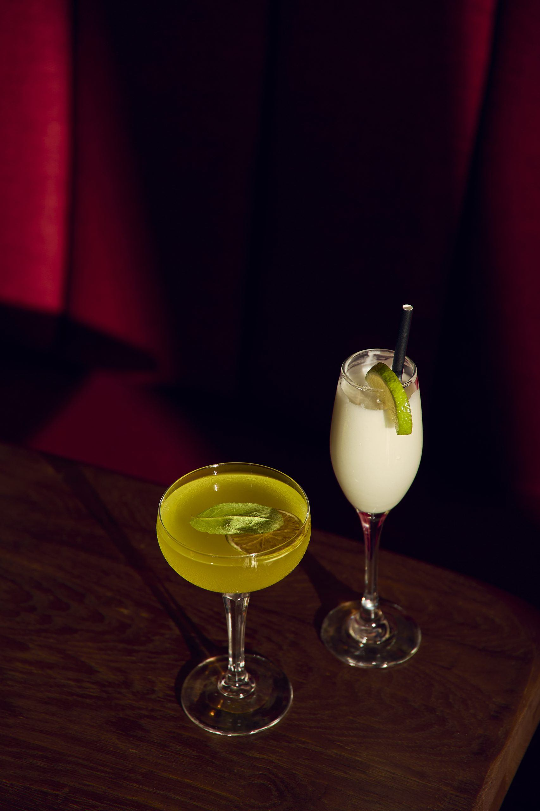
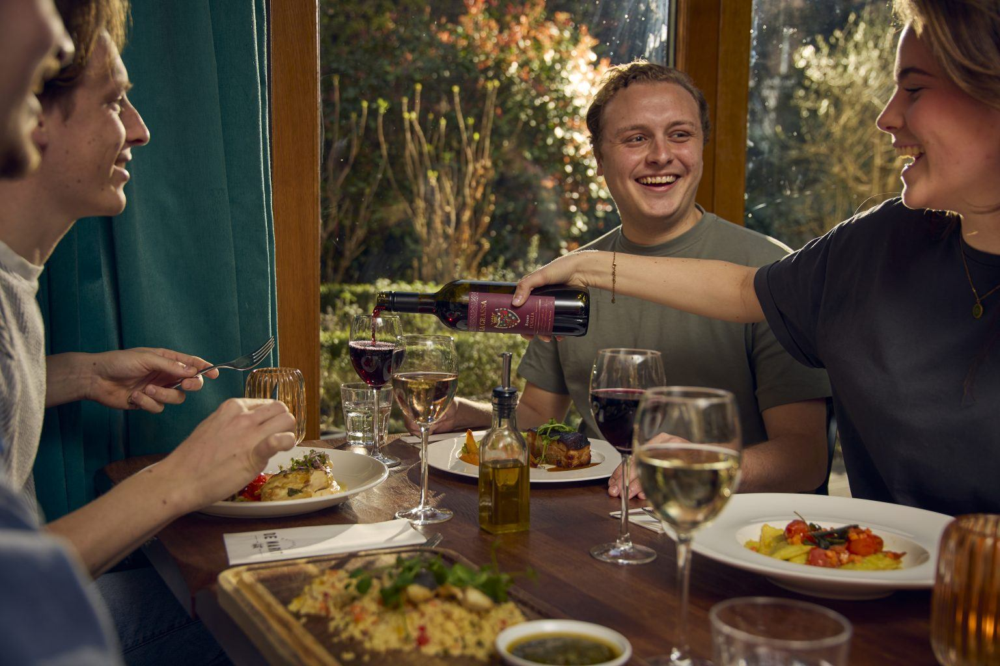

Antipasti lunch
€ 17,50
Een combinatie van diverse kleine gerechten. Geserveerd met friet en brood met dips.
Ciao! Welkom bij
Italiaanse antipasti, pizza's, pasta's en à la carte, overdag en 's avonds. In het gezellige horecastraatje midden in Utrecht.
Zo t/m do vanaf 12.00 · vr & za vanaf 11.00 · Drieharingstraat 27
Volle plateaus, verse kruiden en het geroezemoes van de Drieharingstraat: bij De Markt waan je je even op een Italiaanse markt.
Wij serveren klassieke Italiaanse pizza's, pasta's en salades in een hedendaags jasje. Verder kun je genieten van de à la carte gerechten en een keuze maken uit verschillende antipasti. Ons keukenteam werkt met verse Italiaanse ingrediënten. Begin met de antipasti, kies daarna je hoofdgerecht en sluit af met een traditioneel Italiaans dessert.
Je vindt ons in de Drieharingstraat, tussen het Vredenburg en de Oudegracht.
geen plekje meer online? loop gerust even langs, we houden altijd wat plekjes vrij.
Let op: bij ons kun je alleen betalen met PIN of creditcard.







Voorkom verrassingen en reserveer op tijd een tafel. Voor groepen vanaf 10 personen serveren wij altijd een groepsmenu.
€ 17,50
Een combinatie van diverse kleine gerechten. Geserveerd met friet en brood met dips.
€ 19,50
Verschillende soorten belegde sandwiches (vis, vlees en vegetarisch) en een klein kopje soep.
€ 35,50
Kies uit het groepsmenu hieronder.
€ 42,95
Kies uit het groepsmenu hieronder.
€ 36,95 vanaf 10 personen
Shared dining: als voorgerecht antipasti, als hoofdgerecht pasta, pizza en salade, en als dessert een proeverij van de dessertkaart.
Tot en met 14 personen kiezen jullie op de dag zelf uit de keuzemenu's. Met 15 personen of meer horen we graag uiterlijk 5 dagen van tevoren welke gerechten jullie hebben gekozen. Wij houden uiteraard rekening met allergieën of intoleranties. Voor de wijnen is er een brede selectie, zie de wijnkaart.
Meer personen dan de online reservering toelaat, of op zoek naar een plek om exclusief te zitten met een (grote) groep? Neem contact met ons op.

Een verjaardag in het centrum van Utrecht vier je het liefst goed: samen aan tafel, goed eten en vooral geen gedoe. Kom je met een gezelschap van minimaal 6 personen (dus 5 gasten + de jarige), dan trakteren wij de jarige op een volledig diner.
De jarige kiest zelf: een hoofdgerecht en dessert, een voor- en hoofdgerecht of een volledig driegangendiner. Ideaal met vrienden, met het gezin of met opa en oma aan tafel. Doordeweeks is het vaak nét wat rustiger, dus neem de tijd om bij te praten.
Heerlijke lasagne gegeten. Vriendelijke bediening. Terras op straat en in de tuin.
Wat kun je hier heerlijk eten zeg. Een prima kaart en gastvrij personeel.
Gezellige lunch gehad. Prima gezeten, makkelijk te bereiken en gesitueerd in een gezellige straat met horeca.
| Zondag t/m donderdag | vanaf 12.00 uur |
|---|---|
| Vrijdag & zaterdag | vanaf 11.00 uur |
Kerstvakantie
Van maandag 21-12-2026 tot en met zondag 03-01-2027 geopend vanaf 11.00 uur.
Gesloten op 25-12-2026 en 01-01-2027.
Drieharingstraat 27, 3511 BJ Utrecht
030 230 0991
info@restaurantdemarkt.nl
Parkeer je fiets veilig en overdekt in de bewaakte fietsenstalling op Vredenburg. Vanaf daar is het 3 minuten lopen.
Vanaf Utrecht Centraal loop je via Hoog Catharijne in 10 minuten naar ons. Met de bus: uitstappen bij halte Vredenburg, dan nog 4 minuten lopen.
Betaald parkeren in de parkeergarage onder Hoog Catharijne of Q-Park La Vie.
Op zoek naar een cadeau voor een trouwdag, verjaardag, afstuderen of de feestdagen? De cadeaubon is inwisselbaar bij De Markt in Utrecht, komt direct in de mailbox en je bepaalt zelf het bedrag.
Bestel een cadeaubonInteresse om bij De Markt te werken? Stuur ons een mail en vertel wie je bent.
Mail ons